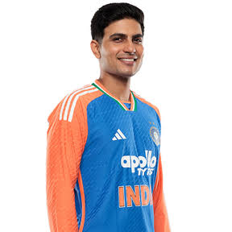
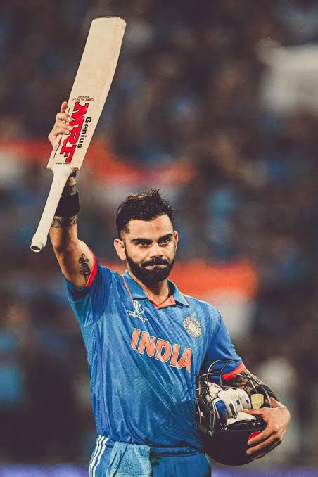
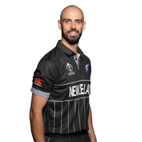
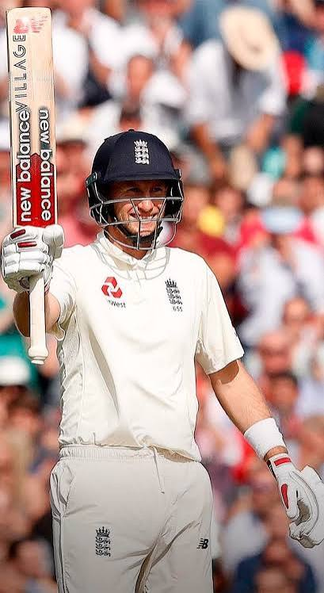

Welcome to the Cricket Fan Zone
Your home for the greatest game on Earth — top players, real match schedules, and the rules you need to know.

Fan Favourites
Meet a few of the stars that make cricket unforgettable.

Shubman Gill
Shubman Gill
India's No.1 ranked ODI batter (801 rating). Over 3,000 ODI runs at an average above 57.

Virat Kohli
Virat Kohli
One of the greatest batters in history — nearly 15,000 ODI runs with 50+ centuries.

Daryl Mitchell
Daryl Mitchell
New Zealand's top-ranked batter (794 rating), a fearsome middle-order striker.

Joe Root
Joe Root
England Test captain and one of the all-time greats, back in the ODI top 10.
Cricket Rules & How-To
Get up to speed with the basics of the game.
Three main international formats: Test (5 days), One-Day International / ODI (50 overs per side), and Twenty20 / T20 (20 overs per side). Formats differ in length and pace of play.
An over is a set of six legal deliveries bowled in sequence. After an over, a different bowler bowls the next over from the other end of the pitch.
Eleven players per side take on batting, bowling, wicketkeeping, and fielding roles. The batting side tries to score runs, while the fielding side bowls and fields to dismiss batters and restrict scoring.
Runs come from running between the wickets, or from hitting the ball to the boundary — a four scores 4 runs and a six scores 6 runs. Extras (no-balls, wides, byes) also add to the total.
A batter is dismissed in ways such as being bowled (ball hits the stumps), caught, lbw (leg before wicket), or run out. When a team is all out or its overs run out, the innings ends.
Season Tracker
Filter the schedule to see what's coming up and how the team is doing.
1st Test — England vs Pakistan
Headingley, Leeds · 19–23 Aug · Result: England won
2nd Test — England vs Pakistan
Lord's, London · 27–31 Aug · In progress at Lord's
3rd Test — England vs Pakistan
Edgbaston, Birmingham · 9–13 Sep · Upcoming
ICC Women's T20 World Cup 2026
Global tournament · Later this year · Upcoming
ICC Men's T20 World Cup 2026
Global tournament · This season · Upcoming